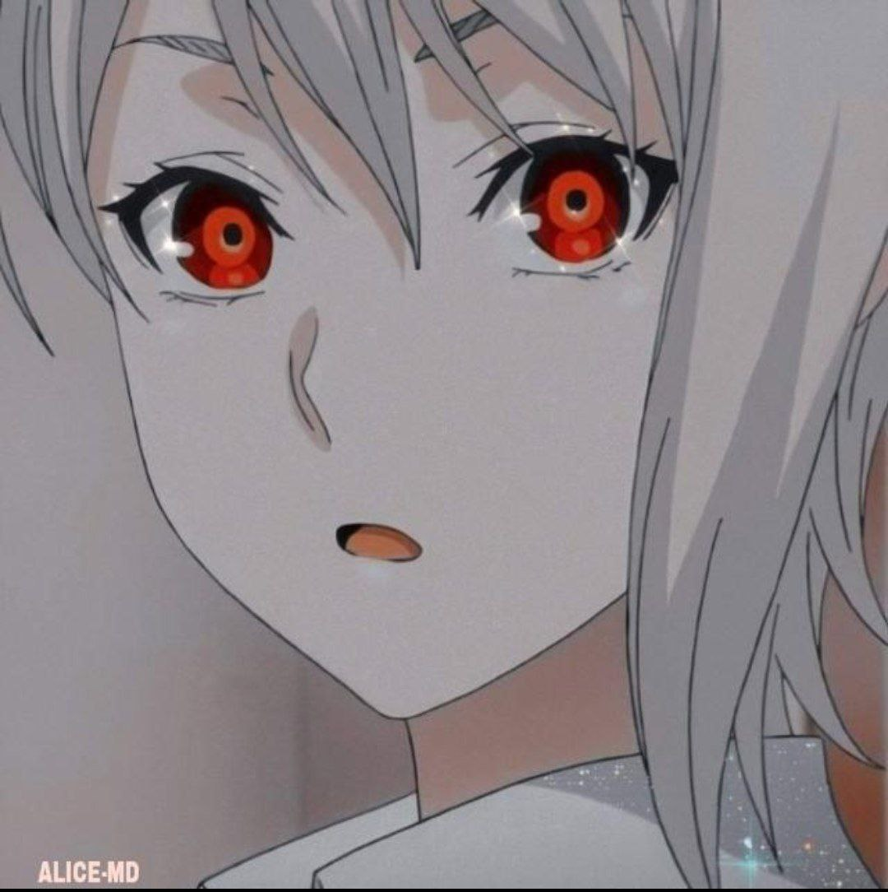

Alice
Alice Whatsapp Bot
Alice bot is an simple multi device bot for WhatsApp That allowing you to get done many tasks.
This is not a Open-Source project. This is just a maintaining and edited Version of some bots.
THIS IS JUST A FUN PROJECT
HAVE FUN
CHAT WITH BOT